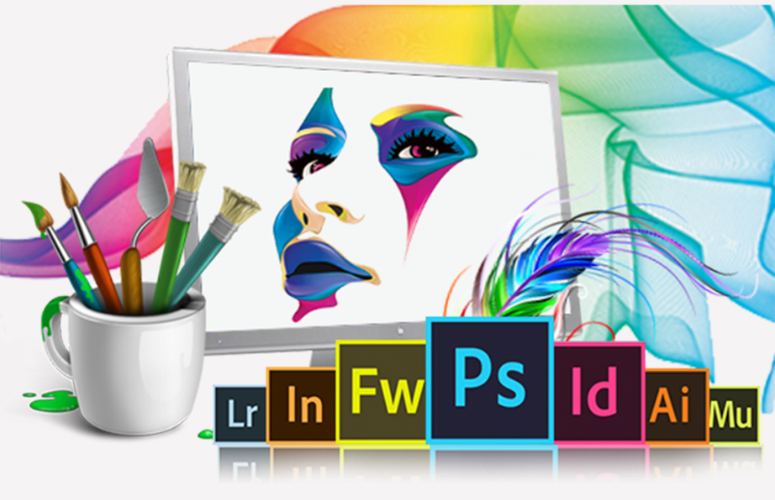

Are you ready to learn all about UI/UX? Learn best practices and techniques from experts with real-world experience, then you are at the right place. This course covers Photoshop, Illustrator, InDesign, Fireworks and Figma.
DURATION:The UI/UX Design Specialization brings a design-centric approach to user interface and user experience design, and offers practical, skill-based instruction centered around a visual communications perspective, rather than on one focused on marketing or programming alone. In this sequence of four courses, you will summarize and demonstrate all stages of the UI/UX development process, from user research to defining a project’s strategy, scope, and information architecture, to developing sitemaps and wireframes. You’ll learn current best practices and conventions in UX design and apply them to create effective and compelling screen-based experiences for websites or apps.
User interface and user experience design is a high-demand field, but the skills and knowledge you will learn in this Specialization are applicable to a wide variety of careers, from marketing to web design to human-computer interaction.
This course is designed for learners who are creative, anyone who wants to build an applications, anyone who wants to start their own business or begin a freelance career.
| Related Course | |
|---|---|
 AutoCAD 2d & 3d AutoCAD 2d & 3d
|
 Graphics and Multimedia |
Ojo Contact148, Olojo Drive High Taste B/Stop, EIIT/FCMB Building, Ojo, Lagos State. |
Satelite Town ContactNo 1 Community Road Abulado Satelite Town, Lagos State. |
Lekki ContactNo 9, Otunba Adedoyin Ogungbe Crescent, Opposite ELIM Motors LekkiPhase 1, Lagos State. |